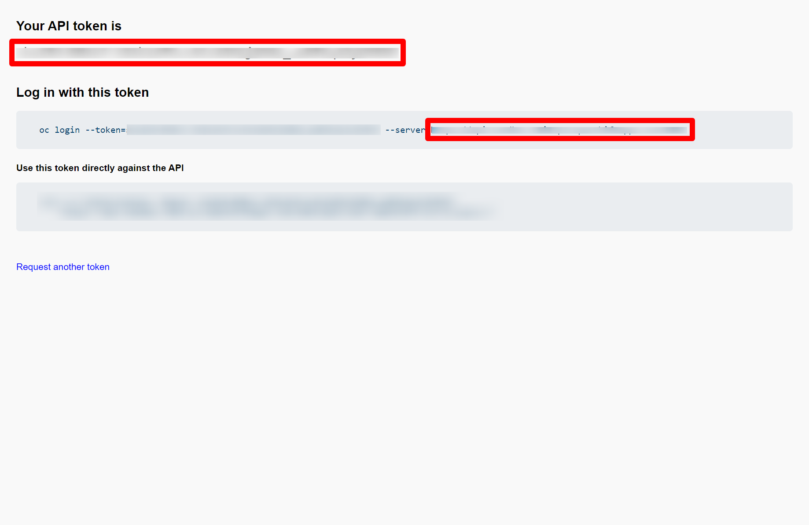

Integrating your Kogito Serverless Workflow project with OpenShift using Serverless Logic Web Tools
You can integrate your Kogito Serverless Workflow project with Red Hat OpenShift. OpenShift is an enterprise-ready Kubernetes container platform, enabling your Kogito Serverless Workflow projects to be deployed and tested online.
Setting Extended Services
The Extended Services tool is required to proxy requests to an OpenShift instance. Therefore, setting the Extended Services enables you to deploy and monitor your Kogito Serverless Workflow projects.
-
In the Serverless Logic Web Tools web application, click the Cogwheel (⚙️) on the top-right corner and go to the Extended Services tab.
-
In case you are not connected to Extended Services, you see You are not connected to Extended Services. Click to setup message.
-
Click on the link in the message.
A window appears containing your current operating system as selected and a link to download the latest version of Extended Services.
-
Download the Extended Services and execute it.
You might need to grant permissions to run the file depending on your operating system and settings.
If you are using macOS, you might encounter the
"Extended Services" is damaged and can’t be opened. You should move it to Binerror message while running the "Extended Services" application. This is due to the overeager approach towards security by macOS and you can fix it by moving the "Extended Services" application out of quarantine. You can execute thexattr -d com.apple.quarantine /Applications/KIE\ Sandbox\ Extended\ Services.appcommand to achieve this.After executing the Extended Services the content in the Extended Services is updated and displays that you are connected to the Extended Services.
Connecting to OpenShift instance using Serverless Logic Web Tools
After setting the Extended Services, you can connect to your OpenShift instance to deploy your Kogito Serverless Workflow projects with Serverless Logic Web Tools.
-
Extended Services tool is installed and running.
-
OpenShift instance is active.
You can create a free developer sandbox. For more information, see OpenShift Developer Sandbox.
-
Log in to your OpenShift instance console interface.
-
In the OpenShift instance console interface, you need your OpenShift project name (also known as namespace), API server, and an access token.
-
For the OpenShift project name, go to the Topology tab and in the top-left corner you see your project name.
 Figure 1. OpenShift project name in OpenShift instance console
Figure 1. OpenShift project name in OpenShift instance console -
To obtain the API server and access token, click on your username and Copy login command.
A new page opens containing your new API token along with
oc clilogin command. From theoc clicommand, copy the value of--server=.Figure 2. OpenShift access token and API server
-
-
Go to the Serverless Logic Web Tools web application, click the Cogwheel (⚙️) on the top-right corner and go to the OpenShift tab.
-
Click the Add connection button and a window will be shown.
-
Enter your OpenShift project name in the Namespace (project) field.
-
Enter the value copied value of
--serverflag in the Host field. -
Enter the value of API token in the Token field.
-
Click Connect.
If the entered values are correct, then the tab updates and displays You’re connected to OpenShift message.
After connecting to OpenShift, you are ready to deploy your Kogito Serverless Workflow projects using Serverless Logic Web Tools. For more information about deploying your projects, see Deploying your Kogito Serverless Workflow projects using Serverless Logic Web Tools.
|
If your OpenShift instance uses self-signed certificates, then you must enable the |
Found an issue?
If you find an issue or any misleading information, please feel free to report it here. We really appreciate it!